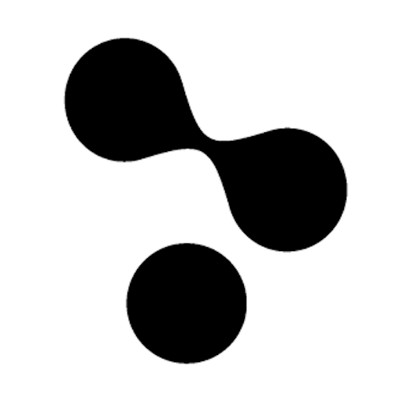

Derivative byla založena v roce 2000 Gregem Hermanovićem, Robem Bairosem a Jarrettem Smithem. Hluboké kořeny TouchDesigneru sahají do softwarového produktu PRISMS vyvinutého ve společnosti Omnibus Computer Graphics v Torontu, Los Angeles a New Yorku v letech 1984 až 1987. Když Omnibus zkrachoval kvůli vyšším než očekávaným nákladům na nákup a údržbu konkurentů, spolu s ještě vyššími očekáváními vůči akcionářům, PRISMS byl zakoupen od likvidátorů Omnibusu Kimem Davidsonem a Gregem Hermanovicem, čímž vznikla společnost Side Effects. Side Effects vyvíjel a licencoval PRISMS koncovým uživatelům po dobu 11 let až do roku 1998 a PRISMS byl použit ve více než 200 celovečerních filmech, což vyvrcholilo jeho prvním Oscarem v roce 1998. Mezitím se Houdini v roce 1995 stal produktem nové generace Side Effects Software, který slouží trhu vizuálních efektů dodnes. V roce 2002 získal Side Effects Software druhou cenu Akademie za inovace v Houdinim, přičemž dosud bylo s Houdinim natočeno dalších 300+ hraných filmů. Greg Hermanović v roce 2000 oddělil Derivative, počínaje tehdejším Houdini 4.1. Derivative se vydal na misi vytvořit interaktivní animaci v reálném čase a 3D v reálném čase, vhodný pro tvorbu jakékoliv formy interaktivního umění/médií/vizualizace. První generace produktu TouchDesigner od Derivative zahrnovala modely od TouchDesigner 007 po 017 v letech 2002 až 2007. V roce 2008 pak Derivative vydal svou novou generaci TouchDesigner 077 v beta verzi, která byla přepracováním předchozích verzí, zahrnující plně procedurální OpenGL kompozici a efekty, nové uživatelské rozhraní a další.
